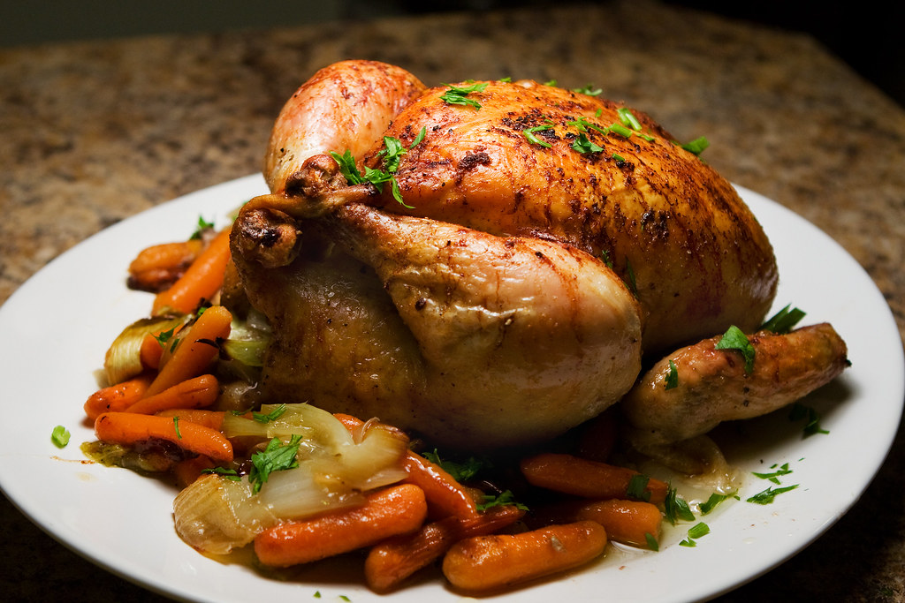

go back to the homepage
Roast Chicken Recipe
This is a simple and delicious recipe for roast chicken that results in a juicy and flavorful bird.
Perfect for a family dinner or special occasion.
Ingredients
- 1 whole chicken (about 1.5 kg)
- 2 tablespoons olive oil
- 1 lemon, halved
- 4 garlic cloves, smashed
- Fresh herbs (such as rosemary, thyme, or parsley)
- Salt and pepper to taste
- 1 onion, quartered
- 2 carrots, cut into chunks
- 2 potatoes, cut into chunks
Instructions
- Preheat your oven to 220°C (428°F).
- Pat the chicken dry with paper towels and place it in a roasting pan.
- Rub the olive oil all over the chicken, then season generously with salt and pepper.
- Squeeze the juice of one lemon half over the chicken and place the squeezed lemon halves inside the cavity along with the smashed garlic cloves and fresh herbs.
- Arrange the quartered onion, carrots, and potatoes around the chicken in the roasting pan. Drizzle with a little more olive oil and season with salt and pepper.
- Roast the chicken in the preheated oven for about 1 hour and 15 minutes, or until the internal temperature reaches 75°C (165°F) and the juices run clear when pierced at the thigh.
- Baste the chicken with the pan juices halfway through cooking to keep it moist.
- Once cooked, remove the chicken from the oven and let it rest for about 10-15 minutes before carving.
- Serve the roast chicken with the roasted vegetables on the side.
